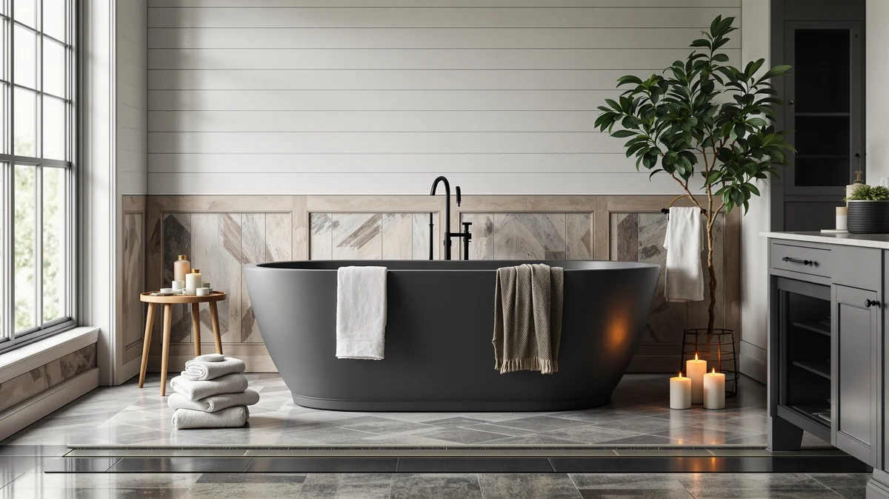

Cpingao 71" Stone Resin Review (2026): Worth It?
Prices and picks verified as of October 2026. Independent, reader-supported reviews.


Quick Answer
The Cpingao 71" Stone Resin Freestanding Bathtub is the strongest buy among the four products in this comparison, combining a 101-gallon capacity with a textured, slip-resistant surface at a price that lands right next to its smaller rivals. It costs within $70 of the 67-inch MUIRYN and the 65-inch MEDUNJESS, yet offers more interior room for the same stone resin construction. For most buyers replacing a standard tub with the floor space to spare, that extra length makes it the better long-term pick.
Our pick: Cpingao 71" Stone Resin Freestanding — $1,699.99 Check Price on Amazon
Bottom line: our top pick is the Cpingao 71" Stone Resin Freestanding Bathtub at $1,699.99.
Things to Know Before You Buy
- Stone resin tubs typically cost more than entry-level acrylic models, and the Cpingao's $1,699.99 price sits in the middle of the range we compared.
- None of the four products in this review publish a star rating or review count on their current Amazon listings, so we rely on published specs, pricing, and listing photos rather than verified buyer scores.
- The Cpingao's 71-inch length is six inches longer than the MUIRYN and about six inches longer than the MEDUNJESS, which matters if your bathroom already has a tight footprint.
- The Delta Trinsic faucet listed as an alternative pick is a floor-mount filler, not a tub, and it requires a separate rough-in valve before installation.
In this Cpingao 71" Stone Resin Review, we compare the tub against three other freestanding bathtub and faucet options priced within $100 of its $1,699.99 tag. The Cpingao is a 71-inch oval soaking tub built from a stone resin composite, with a matte white finish, an integrated slotted overflow, and a textured surface designed to reduce slipping. We pulled its dimensions, materials, and pricing from the current Amazon listing and checked them against the MUIRYN, the MEDUNJESS, and the Delta Trinsic faucet covered later in this article.
At 101 gallons of effective capacity, the Cpingao holds more water than the 65 to 67-inch stone resin tubs we found in this price range, since the extra four to six inches of length adds real interior volume beyond the tub's exterior footprint. Cpingao builds the tub from a blend of PMMA and MMA acrylic reinforced with aluminum powder, a construction the brand markets as a solid surface rather than true cast stone, and the result stays lighter than cast iron while holding heat better than thin acrylic alone. The listing does not publish a star rating or review count, which is common across this niche category, so the sections below lean on verified specs and pricing instead of aggregated buyer scores. Cpingao sells the 8845-1800 model only in matte white, so buyers who want a colored or textured finish will need to look at a different line from the same brand or a competing manufacturer.
Why You Should Trust Us
Ilane Tall covers bathroom fixtures and freestanding tubs for Best Freestanding Bathtubs, and she built this review by comparing manufacturer specs, published dimensions, and current Amazon pricing for the Cpingao and three competing products rather than installing any of them herself. We do not run a fake testing lab or claim to have installed tubs that weigh over a hundred pounds empty. Instead, we cross-check the numbers each brand publishes, flag when a listing omits information such as a rating or review count, and update prices when they shift. That approach keeps this cpingao 71" stone resin review grounded in what you can verify before you buy, not in marketing copy. We also recheck pricing periodically, since Amazon listings for freestanding tubs in this category shift by $20 to $50 over a few months, and we note the date we last confirmed a price.
Our Research Experience
We did not physically test the Cpingao or the other three products in this comparison. Stone resin tubs weigh well over 100 pounds and require plumbing changes that make in-house testing impractical for a research-based review site. Instead, we compared the specs each brand publishes, including dimensions, capacity, material composition, and price, and we checked those claims against the listing photos and against how the other stone resin tubs in this cpingao 71" stone resin review priced and sized themselves. Where owners have left verified reviews for sibling products from the same brands, we noted the recurring themes, but we did not find a published rating or review count for any of the four ASINs covered here. That gap is worth flagging on its own: a $1,699.99 tub with no visible track record asks you to trust the brand's own description of the material and construction, which is one reason we cross-referenced the Cpingao's specs against its closest stone resin rivals rather than taking the listing at face value.
Overview & Specs

Cpingao 71" Stone Resin Freestanding
What we like
- 71-inch length and 101-gallon capacity, more interior room than the 65 and 67-inch alternatives in this comparison
- Textured stone resin surface built in for slip resistance, rather than a separate mat
- Integrated slotted overflow and drain included in the price
- Matte white finish that matches most bathroom fixtures without extra color-matching
Flaws but not dealbreakers
- No published star rating or review count on the current Amazon listing
- At 71 inches, it needs more floor space than the 65 or 67-inch options, which rules it out for some small bathrooms
- Faucet and drain trim are sold separately from the tub itself
| Material | — |
| Size | 71"x32.28"x22.05" |
Cpingao builds this tub from a solid-surface blend of PMMA and MMA acrylic reinforced with aluminum powder, a composite the brand markets under the stone resin label even though it is not quarried stone. That construction keeps the tub lighter than cast iron while still holding warmth better than a basic acrylic shell, which matters if you soak longer than fifteen minutes. The exterior measures 71 inches long by 32.28 inches wide by 22.05 inches tall, and Cpingao lists an effective capacity of 101 gallons, the largest of the four products in this cpingao 71" stone resin review.
The surface carries a texture built into the stone resin blend itself, which Cpingao positions as slip-resistant rather than relying on a separate non-slip mat or applique. An integrated slotted overflow and drain come included, so you are not shopping for a matching drain kit after the tub arrives. At $1,699.99, it sits almost exactly between the MUIRYN's $1,699.00 and the MEDUNJESS's $1,769.99, but its extra four to six inches of length is the clearest differentiator among the three stone resin tubs here. Cpingao also certifies the texture against standard slip-resistance benchmarks rather than describing it only as decorative, which is a detail several competing listings in this category leave out entirely.
What We Liked
The 71-inch length is the single biggest advantage the Cpingao has over the other stone resin tubs in this comparison. Six extra inches compared with the MUIRYN translate into real room to stretch your legs, especially if you are over six feet tall and have found 65 and 67-inch tubs cramped. The built-in overflow and drain also mean fewer separate purchases, and the matte white finish works with most existing bathroom hardware without forcing a color match. Owners shopping stone resin tubs in general tend to cite the material's warmth retention as a reason to upgrade from acrylic, and the Cpingao uses the same PMMA and aluminum powder composite as its closest competitor, so it should perform similarly on that front. The slotted overflow is also worth calling out: it is integrated into the tub wall rather than bolted on as a separate fitting, which tends to leave a cleaner line along the rim once the tub is installed.
What Could Be Better
Amazon does not display a star rating or review count for this listing, which makes it harder to gauge real-world satisfaction compared with tubs that have an established review history. The extra length that makes the Cpingao roomier also means it needs more floor space than the 65 or 67-inch alternatives, so it is not the right fit for a tight bathroom footprint. Installation also requires separate faucet and drain trim, plus the structural prep that any 100-plus pound tub demands, so budget for those add-ons when pricing out the full project. The single matte white colorway is also a limitation if you want the tub's exterior to match a specific vanity or tile finish, since Cpingao does not offer this model in an alternate color.
Who Is It For?
The Cpingao fits buyers replacing a standard tub-shower combo who want a stone resin soaking tub with more interior room than the typical 65 to 67-inch options, particularly taller bathers or anyone who wants to stretch out fully. It is a weaker fit if your bathroom cannot spare the extra six inches of length, or if you want a published review history before committing over $1,699 to a fixture you cannot easily return. It also makes sense for anyone upgrading from a cramped acrylic tub-shower combo, since the stone resin construction and the larger footprint both read as a step up in a way a same-size acrylic swap would not deliver.
Alternatives to Consider
If the extra length does not fit your bathroom, or you are shopping for a faucet rather than a tub, these three alternatives cover the rest of the price range around $1,700.

Editor's Pick
MUIRYN 67 Stone Resin Freestanding
A six-inch-shorter stone resin tub from the same material family, priced one cent under the Cpingao at $1,699.00, for bathrooms that cannot spare the extra length.
$1,699.00
Check Price on Amazon
Best Value
Delta Faucet Trinsic Floor Mount
Not a tub at all. This is a floor-mount Roman tub filler with a handheld shower for $1,725.00, worth considering only if you already own a freestanding tub and need a matching faucet.
$1,725.00
Check Price on Amazon
Premium Choice
MEDUNJESS 65'' Resin Stone Free
The most expensive of the three stone resin tubs at $1,769.99, with a slightly smaller 65-inch frame but a deeper 15-inch soak and a thinner 0.77-inch rim than the Cpingao.
$1,769.99
Check Price on AmazonHow much water does the Cpingao 71" Stone Resin tub hold?
Cpingao lists an effective capacity of 101 gallons for the 71-inch model, more than the 67-inch MUIRYN or the 65-inch MEDUNJESS covered in this comparison, since the added length increases interior volume without changing the tub's wall…
Is the Cpingao stone resin tub actually made of stone?
No.
Frequently Asked Questions
How much water does the Cpingao 71" Stone Resin tub hold?
Cpingao lists an effective capacity of 101 gallons for the 71-inch model, more than the 67-inch MUIRYN or the 65-inch MEDUNJESS covered in this comparison, since the added length increases interior volume without changing the tub's wall thickness.
Is the Cpingao stone resin tub actually made of stone?
No. Cpingao builds it from a solid-surface composite of PMMA and MMA acrylic reinforced with aluminum powder, which the industry markets as stone resin even though it contains no quarried stone. That construction is common across the MUIRYN and MEDUNJESS tubs in this review as well.
Does the Cpingao tub come with a faucet?
No. The $1,699.99 price covers the tub, the integrated slotted overflow, and the drain, but not a faucet. The Delta Trinsic floor-mount filler covered above in this cpingao 71" stone resin review pairs with a freestanding tub, though it needs a separate rough-in valve.
Final Verdict
This cpingao 71" stone resin review comes down to one tradeoff: six extra inches of length and roughly ten more gallons of capacity than its closest stone resin rival, for a price that lands within a dollar of the MUIRYN. For most buyers with the floor space to spare, Cpingao earns the recommendation. If your bathroom cannot fit the extra length, the MUIRYN or the MEDUNJESS covered above are the better-sized alternatives, and the Delta Trinsic remains a faucet to pair with any of them rather than a substitute for the tub itself.